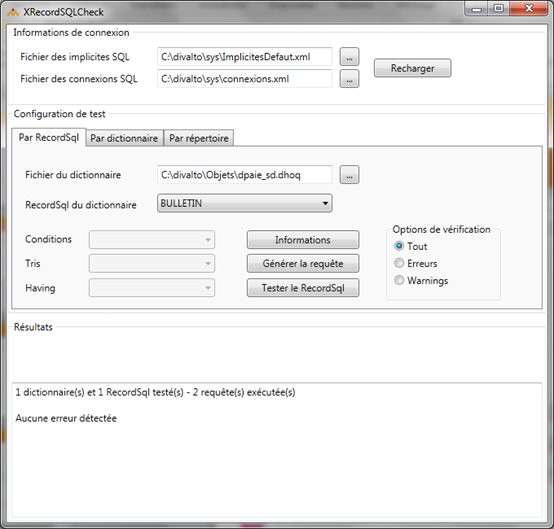

L'utilitaire XRecordSQLCheck est un outil précieux pour le développement de RecordSQL. En effet, il permet de tester le RecordSQL sans développer de programme Diva.
De plus il permet l'optimisation des RecordSQL car il contrôle que l'expression des jointures entre les tables utilise des index.
Pour contrôler la syntaxe des RecordSQL, il se connecte à la base de données cible, qui doit contenir l'ensemble des tables utilisées dans les RecordSQL.
Il traite au choix :
un répertoire de dictionnaire
un dictionnaire
un RecordSQL d'un dictionnaire.

Générer la requête
Ce choix génère le source SQL de la requête choisie. Par un copier/coller on peut ensuite directement exécuter cette requête, par exemple dans SQL Server Management Studio.